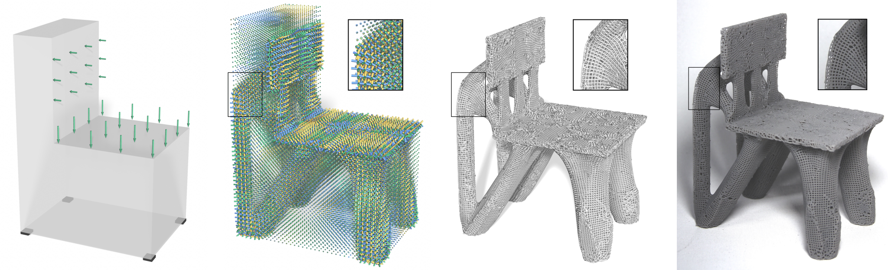
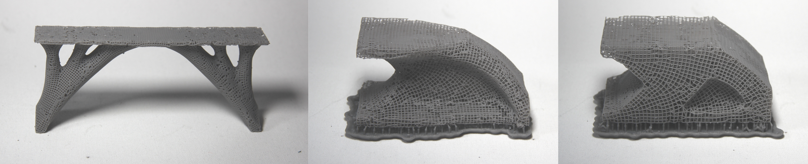
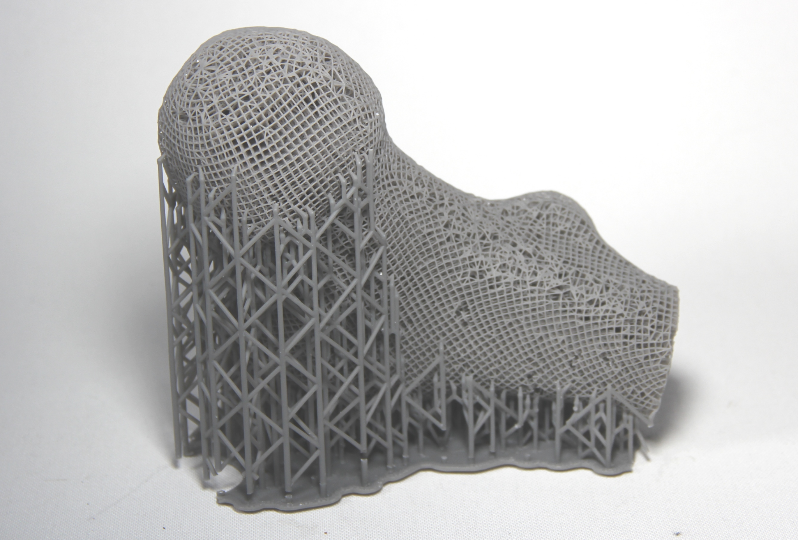

Design and Optimization of Conforming Lattice Structures
IEEE Transactions on Visualization and Computer Graphics (TVCG), 2019
| Jun Wu | Weiming Wang | Xifeng Gao |
| TU Delft | TU Delft | Florida State University |

From left to right: Given a design domain with specified external loads, our method optimizes the distribution of lattice materials for maximizing stiffness. From the optimized, locally-defined lattice configuration, a globally connected lattice structure is compiled, and fabricated by 3D printing.
Abstract
Inspired by natural cellular materials such as trabecular bone, lattice structures have been developed as a new type of lightweight material. In this paper we present a novel method to design lattice structures that conform with both the principal stress directions and the boundary of the optimized shape. Our method consists of two major steps: the first optimizes concurrently the shape (including its topology) and the distribution of orthotropic lattice materials inside the shape to maximize stiffness under application-specific external loads; the second takes the optimized configuration (i.e. locally-defined orientation, porosity, and anisotropy) of lattice materials from the previous step, and extracts a globally consistent lattice structure by field-aligned parameterization. Our approach is robust and works for both 2D planar and 3D volumetric domains. Numerical results and physical verifications demonstrate remarkable structural properties of conforming lattice structures generated by our method.More Prints
 Related Projects
Compatibility in Microstructural Optimization for Additive Manufacturing
Continuous Optimization of Adaptive Quadtree Structures
Minimum Compliance Topology Optimization of Shell-Infill Composites for Additive Manufacturing
Infill Optimization for Additive Manufacturing -- Approaching Bone-like Porous Structures
Self-Supporting Rhombic Infill Structures for Additive Manufacturing
A System for High-Resolution Topology Optimization
Acknowledgements
The authors gratefully acknowledge the support from the LEaDing Fellows Programme at the Delft University of Technology, which has received funding from the European Union's Horizon 2020 research and innovation programme under the Marie Skłodowska-Curie grant agreement No.~707404. Weiming Wang wishes to thank the Natural Science Foundation of China (No.~61702079, U1811463).
Download
 |
Paper 29.1 MB |
Bibtex
@article{Wu2019TVCG,
author={Wu, Jun and Wang, Weiming and Gao, Xifeng},
title={Design and Optimization of Conforming Lattice Structures},
journal={IEEE Transactions on Visualization and Computer Graphics},
year={2021},
volume={27},
number={1},
pages={43-56},
doi={http://dx.doi.org/10.1109/TVCG.2019.2938946},
ISSN={1077-2626},
month={January},
note={https://arxiv.org/abs/1905.02902}
}